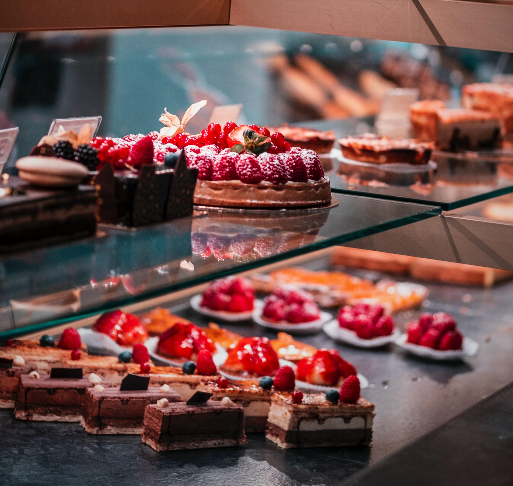
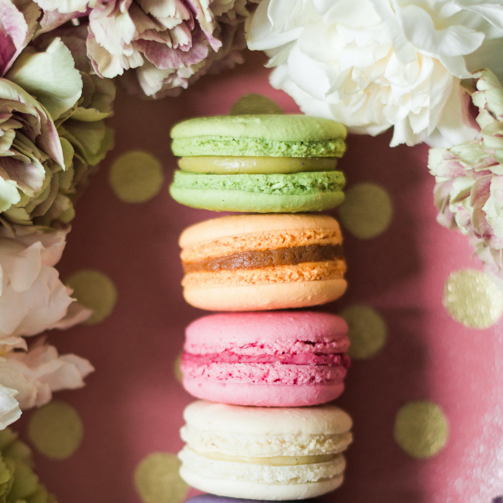

Fresh Baked Breads

Creamy pasteries

Crunchy cookies
Welcome to Baker's Kitchen Web Site
Thank you for visiting our Web Site. We hope that the information you seek is available here. If it's not here, please do reach us through Email or Mobile. We would love to hear from you. Please use our feedback form to tell us about yourself & how we can serve you better.
Introduction
Baker's Kitchen is one of the oldest bakeries in India which operates through thirty retail outlets situated in prime locations throughout the city of Chennai, India. Please see about us for more information about the company. A short history of the company & the story on "How the company got it's name ?" is also available. Latest developments are in What's New ?.
Products
We have more than 50 items on our Products List. About 10 of these are seasonal products. Others are generally produced on a daily basis. Some of these are listed here. Besides our regular range of bakery items Baker's Kitchen provides a range of delicious Wedding Cakes In case you want to know where these products are available, we have listed our retail outlets here. Shortly, we will be able to accept orders online .
Quality Assurance
Baker's Kitchen means Quality. A short write up, "The Three Commandments", explains our commitment to Quality.
Other Information
We would like to hear from suppliers & vendors of bakery ingredients, consumable, equipments, etc. Our retailing operation also quite large. If you have food product or any other product which are closely associated with bakery food products or compliments our products, please do get in touch with us. Please see Business Opportunities page for more information.
If you are looking for a job, please see the job oppportunities page. Specialised training programmes are available to qualified students from recognized catering / baking training institutes.